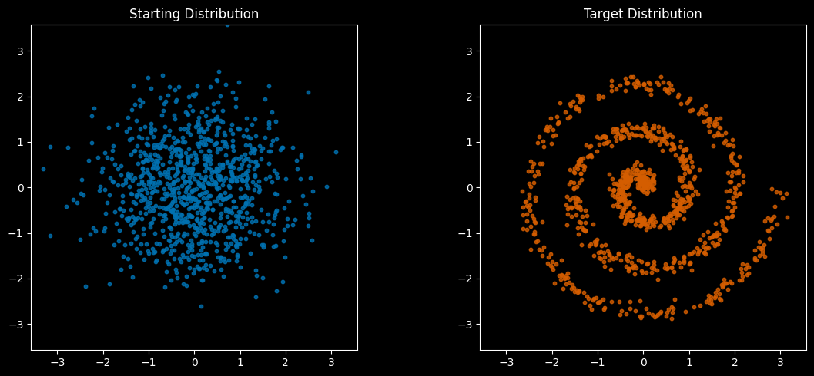
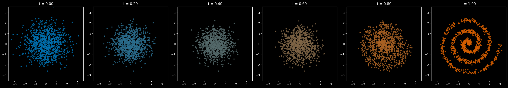

Basic physics provides a “straight, fast” way to get up to speed with flow-based generative models
generative
flows
diffusion
Author
Scott H. Hawley
Published
November 13, 2024
Abstract
In this tutorial post, we provide an accessible introduction to flow-matching and rectified flow models, which are increasingly at the forefront of generative AI applications. Typical descriptions of them are usually laden with extensive probability-math equations, which can form barriers to the dissemination and understanding of these models. Fortunately, before they were couched in probabilities, the mechanisms underlying these models were grounded in basic physics, which provides an alternative and highly accessible (yet functionally equivalent) representation of the processes involved. Let’s flow.
1 Introduction
Flow-based generative AI models have been gaining significant traction as alternatives or improvements to traditional diffusion approaches in image and audio synthesis. These models excel at learning optimal trajectories for transforming probability distributions, offering a mathematically elegant framework for data generation. The approach has seen renewed momentum following Black Forest Labs’ success with their FLUX models [1], spurring fresh interest in the theoretical foundations laid by earlier work on Rectified Flows [2] in ICLR 2023. Improvements such as [3] have even reached the level of state-of-the-art generative models for one or two-step generation.
Intuitively, these models operate akin to the fluid processes that transform the shapes of clouds in the sky. While recent expositions [4] have attempted to make these concepts more accessible through probability theory, the underlying physical principles offer a more direct path to understanding. By returning to the basic physical picture of flows that inspired these generative models, we can build both intuition and deep understanding - insights that may even guide the development of new approaches.
Source: Face-morphing example from Michael Jackson’s “Black Or White” (1991). While technically not a flow-based generative model [5], it’s similar enough to use for an intro image. ;-)
1.1 What’s a Flow?
In the real world, things typically follow curved paths - like water flowing in a river, or crowds of people navigating around obstacles. Here’s a map of wind provided by the WW2010 atmospheric science project at UIUC: at every point in space, the wind has a velocity vector, and the air moves along “streamlines” or “trajectories” parallel to the velocity vectors…
Notice that the streamlines never cross. If the streams were to cross… “it would be bad.” That would imply that the velocity at some point is undefined.
Non-Crossing == Invertible
This non-crossing property is what allows these flows to be invertible (i.e., reversible), a property you sometimes hear in isolation when reading more formal descriptions of flow models.
So, at every point in space there’s a velocity vector telling the little bits of fluid where to go. And just like water or wind flows may depend not only on spatial position but also time, so too can our velocity vector field depend on position and time.
Flow matching learns these natural paths by focusing on the velocity at each point - essentially asking, “Which way should each data point be moving at this moment?”
Terminology: “FM/RF”
It may seem confusing to sometimes see “flow matching” and “rectified flows” being used interchangeably, but this is because they are the same[6]. In this blog post, we’ll use the collective term “FM/RF” models.
Also note that there is no explicit “rectification” mechanism in rectified flows; rather any “rectification” is a description of the effect of flow-matching, i.e. transforming crossing trajectories to non-crossing ones. The addition of “Reflow” to the rectified flow paper [2] is a powerful extension we will cover further below.
2 How Do FM/RF Models Work?
To gain a deep understanding of how models work, having an executable toy model is often a key instructional tool. This tutorial is written as an executable Jupyter notebook, though you can make sense of it without the code, so we will typically collapse or hide the code. But if you want to see it, you can expand the drop-down arrows.
For instance, the code starts with importing packages…
Installs & imports
# Uncomment to install any missing packages:#%pip install torch numpy matplotlib tqdm import torchimport numpy as np%matplotlib inline import matplotlib.pyplot as pltfrom IPython.display import HTML, display, clear_outputfrom tqdm.notebook import tqdm
Choose Your Own Data Shapes
The executable version of this lesson lets you choose various shapes to “morph” between. For this reading, we’ll go from a Gaussian to a Spiral:
Flow models don’t require gaussian prior distributions. You can choose whatever you want.
With the imports in place and the choice of starting and ending distributions chosen, we’re ready to define some utilities to generate and visualize our data. Let’s take a look:
# for accessibility: Wong's color pallette: cf. https://davidmathlogic.com/colorblind#wong_black = [0/255, 0/255, 0/255] # #000000wong_amber = [230/255, 159/255, 0/255] # #E69F00wong_cyan = [86/255, 180/255, 233/255] # #56B4E9wong_green = [0/255, 158/255, 115/255] # #009E73wong_yellow = [240/255, 228/255, 66/255] # #F0E442wong_navy = [0/255, 114/255, 178/255] # #0072B2wong_red = [213/255, 94/255, 0/255] # #D55E00wong_pink = [204/255, 121/255, 167/255] # #CC79A7wong_cmap = [wong_amber, wong_cyan, wong_green, wong_yellow, wong_navy, wong_red, wong_pink]source_color = wong_navytarget_color = wong_redpred_color = wong_greenline_color = wong_yellowbg_theme ='dark'# 'black', 'white', 'dark', 'light'if bg_theme in ['black','dark']: plt.style.use('dark_background')else: plt.rcdefaults()# A few different data distributionsdef create_gaussian_data(n_points=1000, scale=1.0):"""Create a 2D Gaussian distribution"""return torch.randn(n_points, 2) * scaledef create_square_data(n_points=1000, scale=3.0): # 3 is set by the spread of the gaussian and spiral """Create points uniformly distributed in a square"""# Generate uniform points in a square points = (torch.rand(n_points, 2) *2-1) * scalereturn pointsdef create_spiral_data(n_points=1000, scale=1):"""Create a spiral distribution. i like this one more""" noise =0.1*scale #theta = torch.linspace(0, 6*np.pi, n_points) # preferred order? no way theta =6*np.pi* torch.rand(n_points) r = theta / (2*np.pi) * scale x = r * torch.cos(theta) + noise * torch.randn(n_points) y = r * torch.sin(theta) + noise * torch.randn(n_points)return torch.stack([x, y], dim=1)def create_heart_data(n_points=1000, scale=3.0):"""Create a heart-shaped distribution of points""" square_points = create_square_data(n_points, scale=1.0)# Calculate the heart-shaped condition for each point x, y = square_points[:, 0], square_points[:, 1] heart_condition = x**2+ ((5* (y +0.25) /4) - torch.sqrt(torch.abs(x)))**2<=1# Filter out points that don't satisfy the heart-shaped condition heart_points = square_points[heart_condition]# If we don't have enough points, generate morewhilelen(heart_points) < n_points: new_points = create_square_data(n_points -len(heart_points), scale=1) x, y = new_points[:, 0], new_points[:, 1] new_heart_condition = x**2+ ((5* (y +0.25) /4) - torch.sqrt(torch.abs(x)))**2<=1 new_heart_points = new_points[new_heart_condition] heart_points = torch.cat([heart_points, new_heart_points], dim=0) heart_points *= scale return heart_points[:n_points]def create_two_gaussians_data(n_points=1000, scale=1.0, shift=2.5):"""Create a 2D Gaussian distribution""" g = torch.randn(n_points, 2) * scale g[:n_points//2,0] -= shift g[n_points//2:,0] += shift indices = torch.randperm(n_points)return g[indices]def create_smiley_data(n_points=1000, scale=2.5):"make a smiley face" points = []# Face circle#angles = 2 * np.pi * torch.rand(n_points//2+20)#r = scale + (scale/10)*torch.sqrt(torch.rand(n_points//2+20)) #points.append(torch.stack([r * torch.cos(angles), r * torch.sin(angles)], dim=1))# Eyes (small circles at fixed positions)for eye_pos in [[-1, 0.9], [1, 0.9]]: eye = torch.randn(n_points//3+20, 2) *0.2+ torch.tensor(eye_pos) * scale *0.4 points.append(eye)# Smile (arc in polar coordinates) theta =-np.pi/6-2*np.pi/3*torch.rand(n_points//3+20) r_smile = scale *0.6+ (scale/4)* torch.rand_like(theta) points.append(torch.stack([r_smile * torch.cos(theta), r_smile * torch.sin(theta)], dim=1)) points = torch.cat(points, dim=0) # concatenate first points = points[torch.randperm(points.shape[0])] # then shufflereturn points[:n_points,:]# Initialize generator functionssource_gen_fn =Nonetarget_gen_fn =None# Assign generator functions based on user choicesfor gen_choice, gen_fn_name inzip([source_data_choice, target_data_choice], ['source_gen_fn', 'target_gen_fn']): gen_choice = gen_choice.lower()if'two gaussians'in gen_choice: gen_fn = create_two_gaussians_dataelif'heart'in gen_choice: gen_fn = create_heart_dataelif'spiral'in gen_choice: gen_fn = create_spiral_dataelif'square'in gen_choice: gen_fn = create_square_dataelif'smiley'in gen_choice: gen_fn = create_smiley_dataelse: gen_fn = create_gaussian_dataif gen_fn_name =='source_gen_fn': source_gen_fn = gen_fnelse: target_gen_fn = gen_fn# A couple aliases so we can easily switch distributions without affecting later code def create_source_data(n_points=1000, hshift=0): # hshift can make it a bit easier to see trajectories later g = source_gen_fn(n_points=n_points)if hshift !=0: g[:,0] += hshiftreturn gdef create_target_data(n_points=1000, hshift=0): g = target_gen_fn(n_points=n_points)if hshift !=0: g[:,0] += hshiftreturn gdef plot_distributions(dist1, dist2, title1="Distribution 1", title2="Distribution 2", alpha=0.8):"""Plot two distributions side by side""" plt.close('all') fig, (ax1, ax2) = plt.subplots(1, 2, figsize=(12, 5)) ax1.scatter(dist1[:, 0], dist1[:, 1], alpha=alpha, s=10, color=source_color) ax2.scatter(dist2[:, 0], dist2[:, 1], alpha=alpha, s=10, color=target_color) ax1.set_title(title1) ax2.set_title(title2)# Set same scale for both plots max_range =max(abs(dist1).max().item(),abs(dist2).max().item() )for ax in [ax1, ax2]: ax.set_xlim(-max_range, max_range) ax.set_ylim(-max_range, max_range) ax.set_aspect('equal') plt.tight_layout() plt.show() # Explicitly show the plot plt.close()def interpolate_color(t, start='blue', end='red'):"""Interpolate from matplotlib's default green (t=0) to red (t=1)""" start_color = plt.cm.colors.to_rgb(start) end_color = plt.cm.colors.to_rgb(end)return (1-t) * np.array(start_color) + t * np.array(end_color)def show_flow_sequence(start_dist, end_dist, n_steps=5, c_start=source_color, c_end=target_color):"""Show the flow as a sequence of static plots""" fig, axes = plt.subplots(1, n_steps, figsize=(4*n_steps, 4)) max_range =max(abs(start_dist).max().item(),abs(end_dist).max().item() )for i, ax inenumerate(axes): t = i / (n_steps -1) current = start_dist * (1-t) + end_dist * t color = interpolate_color(t, start=c_start, end=c_end) ax.scatter(current[:, 0], current[:, 1], alpha=0.8, s=10, c=[color]) ax.set_xlim(-max_range, max_range) ax.set_ylim(-max_range, max_range) ax.set_aspect('equal') ax.set_title(f't = {t:.2f}') plt.tight_layout() plt.show() plt.close()# Create our distributions and look at themn_points =1000source, target = create_source_data(n_points), create_target_data(n_points)plot_distributions(source, target, "Starting Distribution", "Target Distribution")

The process of transition from the starting “source” to the final “target” might include snapshots like these:

(Note the colors aren’t meaningful, they’re just added to make it easier to distinguish what we’re looking at. Our data are just points in 2-D space.)
So, how do we get the points from the source distribution to fit with the target distribution? The simplest way (though not the only way) is to assume points move in straight lines from source to target. Even though our network might learn more complex paths later, this gives us a starting point for training.
2.1 The Starting Setup
The training setup for flow matching models is as follows:
We start by randomly pairing points from the source & the target – yes, really. 🤣
We move the points along straight trajectories, and the speed of each point is constant.
Code for 2D flow-matching diagram with crossing lines
import os source_L = source.clone()shift =5source_L[:,0] -= shifttarget_R = target.clone()target_R[:,0] += shift # Note: fixed the indexing here from [:0] to [:,0]fig, ax = plt.subplots(figsize=(8,4))# show the whole distributionax.scatter(source_L[:,0], source_L[:,1], color=source_color, alpha=0.5)ax.scatter(target_R[:,0], target_R[:,1], color=target_color, alpha=0.5)# Draw lines connecting points, with source & target points outlinedn_lines =15ax.scatter(source_L[:n_lines,0], source_L[:n_lines,1], color=source_color, alpha=0.5, facecolor='none', edgecolor=line_color,)ax.scatter(target_R[:n_lines,0], target_R[:n_lines,1], color=target_color, alpha=0.5, facecolor='none', edgecolor=line_color,)for i inrange(n_lines): ax.plot([source_L[i,0], target_R[i,0]], [source_L[i,1], target_R[i,1]], '-', alpha=0.3, color=line_color+[.9], linewidth=2) # or lw=2ax.set_aspect('equal')ax.set_xticks([])ax.set_yticks([])ax.spines['top'].set_visible(False)ax.spines['right'].set_visible(False)ax.spines['bottom'].set_visible(False)ax.spines['left'].set_visible(False)for [x, label] inzip([-shift,shift], ['Source','Target']): ax.text(x, 4, label, fontsize=12, color='black', ha='center', va='center',)#plt.show()os.makedirs('images', exist_ok=True) save_file='images/gaussian_to_spiral_crossing_lines.png'plt.savefig(save_file)#plt.show()plt.close()#HTML(f"""<center><img src="{save_file}" width="600"></center>""")
Straight Trajectories == Linear Interpolation
The idea of guessing straight trajectories at constant speed is identical to simple linear interpolation between source and target data points.
There are big issues with doing this: The random pairing results in lots of trajectories that cross each other. But this is a starting point for Flow Matching. So in other words, when training a Flow Matching model…
…well, ok not quite: we’re going to allow the trajectories of individual points to cross as we train the model. This is a bit “confusing” for the model, which will be trying to learn a velocity field, and that isn’t defined where trajectories cross. Eventually, however, the model will learn to estimate the aggregated motion of many particles, which will sort of average out to arrive at the “bulk motion” of the flow. This is similar to how the Brownian motion [7] of many air or water particles averages out on the macroscopic level, giving us streamlines that don’t cross.1
This is why flow matching is about transforming distributions, not individual points. The learned velocity field might not exactly match any of our training trajectories, but it captures the statistical flow needed to transform one distribution into another.
Here’s a visualization from the code we’ll execute later in the lesson. We’ll plot…
Our naive training trajectories (with crossings)
The actual learned flow field (i.e., the velocity vector field)
The paths (aka “trajectories”) that data points follow when flowing with the learned field
Left: Training data uses simple straight lines (with many crossings). Middle: The learned flow (velocity vector) field is smooth and continuous. Right: Actual trajectories following the flow field don’t cross.
2.2 How Are Flows “Learned”?
The goal of the machine learning system is as follows: for any point in space and any time t between 0 and 1, we want to learn the correct velocity (direction and speed) that point should move. It’s like learning the “wind map” that will blow the starting distribution cloud into the shape of the target distribution cloud.
Since neural networks are such useful engines for approximation and interpolation, we’ll let a neural network “learn” to estimate the mapping between locations and times (as inputs), and velocities (as outputs).
Terminology: “Simulation Free”
You’ll sometimes see flow-maching models being referred to as “simulation free.” This is just an indication that the flow we arrive at is not the result of any explicit simulation of any process (physical or otherwise). The flow obtained arises simply from the aggregation (or “averaging out”) of many particles moving along imagined straight lines and crossing paths.
2.2.1 The Neural Network’s Job
The neural network has one job: given a position in space and a time, to output a velocity vector. That’s all it does. Below is the code for this model that will “learn” to estimate velocity vectors.
import torch.nn as nnimport torch.nn.functional as Fclass VelocityNet(nn.Module):def__init__(self, input_dim, h_dim=64):super().__init__()self.fc_in = nn.Linear(input_dim +1, h_dim)self.fc2 = nn.Linear(h_dim, h_dim)self.fc3 = nn.Linear(h_dim, h_dim)self.fc_out = nn.Linear(h_dim, input_dim)def forward(self, x, t, act=F.gelu): t = t.expand(x.size(0), 1) # Ensure t has the correct dimensions x = torch.cat([x, t], dim=1) x = act(self.fc_in(x)) x = act(self.fc2(x)) x = act(self.fc3(x))returnself.fc_out(x)# Instantiate the modelinput_dim =2model = VelocityNet(input_dim)
…That’s it! Looks pretty simple, right? That’s because to make the system work we’ll need more than just the velocity field model.
Apart from the velocity model (i.e., the neural network, for us), the rest of the software system then uses these generated velocities to move points around. The model’s velocities are then used in a differential equation describing the small change to each particle’s position \(\vec{r}\) over a short time \(dt\):
\[ d\vec{r} = v(\vec{r},t) dt\]
That equation is integrated by some (totally separate) numerical integration routine. A popular choice in the machine learning world is the “forward Euler” method, which is simple to implement, but will need to be upgraded (see further below) to get good results.
Integrator code: generate/predict samples using the trained model
@torch.no_grad()def integrate_path(model, initial_points, step_fn=fwd_euler_step, n_steps=100, save_trajectories=False, warp_fn=None):"""this 'sampling' routine is primarily used for visualization.""" device =next(model.parameters()).device current_points = initial_points.clone() ts = torch.linspace(0,1,n_steps).to(device)if warp_fn: ts = warp_fn(ts)if save_trajectories: trajectories = [current_points] for i inrange(len(ts)-1): current_points = step_fn(model, current_points, ts[i], ts[i+1]-ts[i])if save_trajectories: trajectories.append(current_points)if save_trajectories: return current_points, torch.stack(trajectories).cpu()return current_points generate_samples = integrate_path # just lil' alias for the probability / diffusion model crowd ;-)
2.3 Training Code
The goal of the training code is twofold: 1. to expose the model to as many locations and times as possible – at least for those times & locations that “matter most”. This exposure is what I’ll refer to as “coverage”. 2. to force it to learn to generate (approximately) correct velocities at those times and locations.
That’s it. The training code doesn’t actually do any integration or solving, but we’ll typically execute the integration just to visualize “how we’re doing” as the training progresses.
Viz code: calls integrator to calc motion given v field, makes pictures
The clever part about flow matching is how we train this network. For each training step:
Sample random points from our source distribution
Sample random time points between 0 and 1
Calculate where these points should be at those times (we’ll see how in a moment)
Calculate what velocity they should have at those times
Train the network to predict these velocities
Code for train_model() training loop
import torch.optim as optimdef train_model(model, n_epochs=100, lr=0.003, batch_size=2048, status_every=1, viz_every=1, warp_fn=None): optimizer = optim.Adam(model.parameters(), lr=lr) loss_fn = nn.MSELoss() step, n_steps =0, 100 device =next(model.parameters()).devicefor epoch inrange(n_epochs): model.train() pbar = tqdm(range(n_steps), leave=False)for _ in pbar: step +=1 optimizer.zero_grad()# by randomly generating new data each step, we prevent the model from merely memorizing source_samples = create_source_data(batch_size).to(device) target_samples = create_target_data(batch_size).to(device) t = torch.rand(source_samples.size(0), 1).to(device) # random times for traningif warp_fn: t = warp_fn(t) # time warp is good for coverage but not as helpful for training as it is during integration/sampling interpolated_samples = source_samples * (1- t) + target_samples * t line_directions = target_samples - source_samples drift = model(interpolated_samples, t) loss = loss_fn(drift, line_directions) loss.backward() optimizer.step() status_str =f'Epoch [{epoch +1}/{n_epochs}], Loss: {loss.item():.4f}' pbar.set_description(status_str)if (epoch +1) % viz_every ==0: model.eval() clear_output(wait=True) # Clear previous plots viz(val_points, target_samples[:val_points.shape[0]], model) plt.show() plt.close() # Close the figure to free memory model.train()if epoch==n_epochs-1: print(status_str) # keep last status from being clearedreturn model
fm_model = train_model(model, n_epochs=100) # this will take a couple minutes
Epoch [100/100], Loss: 1.8636
Here’s an animation of our model integrating the flow from start to finish:
Code for animating points in flow
import matplotlib.animation as animationfrom IPython.display import HTML, display, clear_outputfrom matplotlib import rcimport os@torch.no_grad()def create_flow_animation(start_dist, models, titles=None, figsize=None, n_frames=50, step_fn=fwd_euler_step, n_steps=100, warp_fn=None, save_file=None, height=4):""" Create an animation showing multiple distribution flows Args: start_dist: Starting distribution models: List of models to animate titles: List of titles for each subplot (optional) figsize: Figure size (optional) n_frames: Number of animation frames integrator: Integration function to use jitter: Amount of jitter to add save_file: Path to save animation (optional) height: Height of each subplot """ plt.close('all') # Close all open figuresifnotisinstance(models, list): models = [models] n_plots =len(models)if titles isNone: titles = [f'Flow {i+1}'for i inrange(n_plots)]eliflen(titles) != n_plots:raiseValueError(f"Number of titles ({len(titles)}) must match number of models ({n_plots})")# Calculate figure sizeif figsize isNone: figsize = [height * n_plots, height]# Create subplots fig, axes = plt.subplots(1, n_plots, figsize=figsize)if n_plots ==1: axes = [axes] plt.close() # Close the figure immediately# Initialize scatters and trajectories scatters = [] all_trajectories = []# Generate trajectories for each model max_range =abs(start_dist).max().item()for i, model inenumerate(models): device =next(model.parameters()).device end_dist, trajectories = integrate_path(model, start_dist.clone().to(device), n_steps=n_frames, step_fn=step_fn, warp_fn=warp_fn, save_trajectories=True) all_trajectories.append(trajectories.cpu()) scatters.append(axes[i].scatter([], [], alpha=0.6, s=10, color=wong_pink))# Update max range max_range =max(max_range, abs(end_dist.cpu()).max().item())# Set up axesfor i, ax inenumerate(axes): ax.set_xlim((-max_range, max_range)) ax.set_ylim((-max_range, max_range)) ax.set_aspect('equal') ax.set_xticks([])for spine in ['top', 'right', 'bottom', 'left']: ax.spines[spine].set_visible(False) ax.set_title(titles[i])def init():"""Initialize animation"""for scatter in scatters: scatter.set_offsets(np.c_[[], []])returntuple(scatters)def animate(frame):"""Update animation frame"""# Update axis limits (in case they need to be adjusted)for ax in axes: ax.set_xlim((-max_range, max_range)) ax.set_ylim((-max_range, max_range))# Update scatter positionsfor scatter, trajectories inzip(scatters, all_trajectories): scatter.set_offsets(trajectories[frame].numpy())returntuple(scatters)# Create animation anim = animation.FuncAnimation(fig, animate, init_func=init, frames=n_frames, interval=20, blit=True)# Handle saving or displayingif save_file: os.makedirs(os.path.dirname(save_file), exist_ok=True) anim.save(save_file, writer='ffmpeg', fps=30)return HTML(f"""<center><video height="350" controls loop><source src="{anim_file}" type="video/mp4"> Your browser does not support the video tag. </video></center>""")else: # direct matplotlib anim offers better controls but makes ipynb file size huge rc('animation', html='jshtml')return HTML(anim.to_jshtml()) plt.close()anim_file ='images/particles_fm.mp4'create_flow_animation(val_points.clone(), models=[fm_model], titles=['Flow Matching'], n_frames=50, save_file=anim_file)
So, even though we trained using trajectories that crossed, what the model learned were non-crossing (but curvy!) trajectories. Here’s a static plot of these:
Show the code
@torch.no_grad()def plot_training_trajectories_vs_learned_flow(model):"""Compare training trajectories with learned flow field""" plt.figure(figsize=(15, 5))# 1. Plot some training trajectories plt.subplot(131) n_trajs =50# Number of trajectories to show device =next(model.parameters()).device source = create_gaussian_data(n_trajs) target = create_square_data(n_trajs) current_points = source.clone().to(device)# Plot straight-line trajectories from source to target times = torch.linspace(0, 1, 20)for i inrange(n_trajs): traj = source[i:i+1] * (1- times.reshape(-1, 1)) + target[i:i+1] * times.reshape(-1, 1) plt.plot(traj[:, 0], traj[:, 1], 'b-', alpha=0.6, linewidth=3) plt.title('Training Trajectories\n(with crossings)') plt.axis('equal')# 2. Plot learned flow field plt.subplot(132) x = torch.linspace(-3, 3, 20) y = torch.linspace(-3, 3, 20) X, Y = torch.meshgrid(x, y, indexing='ij') points = torch.stack([X.flatten(), Y.flatten()], dim=1).to(device)# with torch.no_grad():# t = 0.5 # Show flow field at t=0.5# ones = torch.ones(points.size(0), 1) ones = torch.ones(points.size(0), 1).to(device) t = ones * (0.5) velocities = model(points, t).cpu()#print("points.shape, ones.shape = ",points.shape, ones.shape) #velocities = model(points, t*ones) points = points.cpu() plt.quiver(points[:, 0], points[:, 1], velocities[:, 0], velocities[:, 1], alpha=0.5, color=line_color, linewidth=3) plt.title('Learned Flow Field\nat t=0.5') plt.axis('equal')# 3. Plot actual paths taken using learned flow plt.subplot(133) source = create_gaussian_data(n_trajs)# Use RK4 to follow the learned flow paths = [] n_steps =20 dt =1.0/ n_stepswith torch.no_grad(): ones = torch.ones(current_points.size(0), 1).to(device)for i inrange(n_steps): paths.append(current_points.clone())# RK4 step t = ones * (i * dt) k1 = model(current_points, t) k2 = model(current_points + k1 * dt/2, t + dt/2) k3 = model(current_points + k2 * dt/2, t + dt/2) k4 = model(current_points + k3 * dt, t + dt) current_points = current_points + (k1 +2*k2 +2*k3 + k4) * dt/6 paths = torch.stack(paths).cpu()# Plot the actual pathsfor i inrange(n_trajs): traj = paths[:, i, :] plt.plot(traj[:, 0], traj[:, 1], color=line_color, alpha=0.5, linewidth=3) plt.title('Actual Paths\nFollowing Learned Flow') plt.axis('equal') plt.tight_layout() plt.savefig('images/cross_uncross_plot.png') plt.show() plt.close()# Run the visualizationplot_training_trajectories_vs_learned_flow(fm_model)
…So we see that even though the model was trained using lots of crossing paths, it learned a smooth flow from them!
Even though the trajectories on the right are smooth and non-crossing, their curviness means that we need to integrate slowly and carefully to avoid accruing significant error. Good news: the “Rectified Flow” paper of Liu et al [2] offers a powerful way to speed up the integration by “straightening” the curved trajectories, a method they call “Reflow.”
3 “Reflow” to Go Straighter & Faster
The Reflow idea is that, instead of randomly pairing source and target points when choosing straight trajectories, we use “simulated target points” by integrating the source points forward using the learned flow model. Then we use those endpoints as the targets and assume linear motion as before.
This has the effect of straightening out the curved trajectory of the flow matching model, making the new “reflowed” trajectories much easier and faster to integrate!
Essentially, Reflow is a “teacher-student” paradigm in which the (pre-)trained flow-matching model is the teacher, and the new Reflowed model is the student. One can also think of this as a kind of distillation, akin to “consistency models” [8].
Before we can rely on those integrated endpoints, we should make a couple of improvements to how we use the model we just trained.
3.1 Upgrading Our Gear First
Neither of these upgrades require retraining the model. They just help to make more efficient, accurate use of it so it can serve as an effective “teacher” to the “student” Reflow model we’ll train below.
3.1.1 More Points Where Needed (via Time Warping)
You’ll notice that trajectories are sharply curved in the middle, but are straight near the start and end. Just as you’d slow down when driving around a sharp turn, we should take smaller integration steps in these curved regions for accuracy.
This idea of non-uniform temporal sampling appears throughout generative models. Esser et al.’s “FLUX” paper [1] specifically designs their sampling distribution to concentrate points in the middle of the integration where accuracy is most crucial. The same principle applies here: during training, we need good coverage where the model needs to make careful predictions, and during inference, high-curvature regions require denser sampling.
One handy S-shaped time-warping function is this polynomial that lets us vary the concentration of points2:
The parameter \(s\) is the slope at t=1/2, and controls where points concentrate: values between 0 and 1 give us more points in the middle, which is exactly what we want for these curved trajectories. The value \(s=0.5\) is a good choice, as we’ll see shortly.
This approach can improve accuracy and/or require fewer total integration steps. Let’s look at the results of different amounts of time-warping around a simple parabola:
Show the code: warp_time function
def warp_time(t, dt=None, s=.5):"""Parametric Time Warping: s = slope in the middle. s=1 is linear time, s < 1 goes slower near the middle, s>1 goes slower near the ends s = 1.5 gets very close to the "cosine schedule", i.e. (1-cos(pi*t))/2, i.e. sin^2(pi/2*x)"""if s<0or s>1.5: raiseValueError(f"s={s} is out of bounds.") tw =4*(1-s)*t**3+6*(s-1)*t**2+ (3-2*s)*t if dt: # warped time-step requested; use derivativereturn tw, dt *12*(1-s)*t**2+12*(s-1)*t + (3-2*s) return tw
viz code for parabolic path / variable dot-spacing figure
from functools import partial parab =lambda x: 4*(x-0.5)**2# curve shaped_parab =lambda x: 8*(x-0.5) # derivativeds =lambda x: torch.sqrt(1+ d_parab(x)**2) # differential arc lengthdef calculate_total_arc_length(n=1000):"""Calculate the total arc length of the parabola y = 4(x - 0.5)**2 from x=0 to x=1""" x_values = torch.linspace(0, 1, n) arc_length_values = ds(x_values) total_arc_length = torch.trapz(arc_length_values, x_values)return total_arc_lengthdef fake_velocity_model(loc, t, speed=1.0):"""For demo purposes only: Follow a parabolic path and move at unit speed Compute the x and y components of the velocity along the parabola y = 4(x - 0.5)^2""" x, y = loc[:, 0], loc[:, 1] slope = d_parab(x) direction = torch.stack([torch.ones_like(slope), slope], dim=1) magnitude = torch.norm(direction, dim=1, keepdim=True) unit_velocity = direction / magnitude return unit_velocity*speed@torch.no_grad()def integrate_motion_along_parabola( model, initial_points, n_steps=30, step_fn=fwd_euler_step, s=0.5,):"""one-off integrator used only for this one visualization figure. don't use for anything else""" current_points = initial_points.clone() trajectories = [current_points.cpu().clone()] ts = torch.linspace(0,1.0, n_steps) ts = warp_time(ts, s=s) # here's the time worpage speed = calculate_total_arc_length() # Total travel time is 1.0 so speed "=" distance scaled_model = partial(model, speed=speed)with torch.no_grad():for i inrange(n_steps-1): current_points = step_fn( scaled_model , current_points.clone(), ts[i], ts[i+1]-ts[i]) trajectories.append(current_points.cpu().clone())return torch.stack(trajectories)@torch.no_grad()def viz_parabola_with_steps(step_fn=fwd_euler_step, n_steps=28):"""varies warp parameter s and integrates along a parabola""" plt.close() t_curve = torch.linspace(0,1,100) n_t_points = n_steps # 28 if step_fn==fwd_euler_step else 6 t_points = torch.linspace(0,1,n_t_points) n_s =6# number of different s values to show fig, ax = plt.subplots(1, n_s, figsize=(n_s*2.8, 3)) plt.suptitle(f"Integration scheme = {step_fn.__name__}", fontsize=16, y=1.05) initial_points = torch.tensor([[0,1]]) # one point in the top leftfor i, s inenumerate(torch.linspace(.25, 1.5, n_s)): # warp time by different amounts via s parameter ax[i].plot(t_curve, parab(t_curve)) # solid line showing path traj = integrate_motion_along_parabola(fake_velocity_model, initial_points, n_steps=n_t_points, s=s, step_fn=step_fn).squeeze() err_str =f"\nerror={F.mse_loss(parab(traj[:,0]),traj[:,1]):.3g}" ax[i].scatter(traj[:,0], traj[:,1], label=f's = {s:.2f}{err_str}', color=(wong_cmap*2)[i]) legend = ax[i].legend(loc='upper center', frameon=False, markerscale=0, handlelength=0, fontsize=12)for text in legend.get_texts(): text.set_ha('center')ifabs(s-1.0) <1e-3: ax[i].set_title('Even Spacing') ax[0].set_title('More Points in Middle') ax[-1].set_title('More Points at Ends') plt.show() plt.close()viz_parabola_with_steps()
While the results for \(s=0.5\) are better than the others, we see that none of these examples make it all the way around the parabola (to the point (1,1))! If we’re going to be using the flow matching model as a proxy for the true target data, we should have some confidence that it’s actually “getting to” the target data. We could add more points to the integration, but there’s another way: upgrade the integration (i.e. sampling) operation to a higher order of accuracy.
3.1.2 Better Integration / Sampling
While forward Euler is surprisingly popular in ML circles, those with simulation backgrounds eye it with suspicion: despite being fast and easy to implement, it’s also highly inaccurate and can lead to instabilities. The poor accuracy may not be an issue when everything’s an approximation anyway, but we can do a lot better.
People who work with diffusion models know this, e.g. in Katherine Crowson’s k-diffusion package offers a bevy of integration choices. For here we’ll just implement the popular 4th-order Runge-Kutta (RK4) scheme. It’s more “expensive” than forward Euler in that each step requires 4 function evaluations instead of forward Euler’s 1 step, and it requires some extra storage, but the advantages you gain in accuracy are seriously worth it (e.g., because you can take much longer steps in time).
Code for 4th-order Runge-Kutta integration
def rk4_step(f, # function that takes (t,y) and returns dy/dt, i.e. velocity y, # current location t, # current t value dt, # requested time step size ): k1 = f(y, t) k2 = f(y + dt*k1/2, t + dt/2) k3 = f(y + dt*k2/2, t + dt/2) k4 = f(y + dt*k3, t + dt) return y + (dt/6)*(k1 +2*k2 +2*k3 + k4)viz_parabola_with_steps(step_fn=rk4_step, n_steps=6)
It’s cool how the RK4 results, despite showing less error than the Euler results, actually involve less computational cost in terms of number of function evaluations, though the RK4 scheme needs 4 times the storage compared to forward Euler. (The good news is that no PyTorch gradients need to be stored; the integrator is only ever used when the model is in “eval” mode.)
3.2 Learning to “ReFlow”
When we train the “Reflowed” model, aka the student model, note that the “target data” will no longer be supplied by the true target data anymore. Rather, we will be using the trajectory endpoints integrated/generated using the teacher model, i.e. the pretrained flow matching model.
So we might ask… how close of an approximation are those learned flow endpoints to the real thing? We’re going to be approximating an approximation, but how good is the original approximation?
Code for the new training loop w/ ReFlowed targets
def train_reflow_model(model, pretrained_model=None, n_epochs=40, lr=0.001, batch_size=2048, status_every=1, viz_every=1, # in epochs new_points_every=1, # in steps warp_fn=warp_time, step_fn=rk4_step, # rk4 so we get high-quality outputs while reflowing ):"""This is almost IDENTICAL to the previous training routine. The difference is the change in "target_samples" via what the RF authors call "ReFlow": Instead of (randomly) paring source points with points in the "true target distribution", we use the pretrained/teacher model to integrate the source points to their (predicted) flow endpoints and use THOSE as the "target" values. """ optimizer = optim.Adam(model.parameters(), lr=lr) loss_fn = nn.MSELoss() step, n_steps =0, 100 device =next(model.parameters()).devicefor epoch inrange(n_epochs): model.train() pbar = tqdm(range(n_steps), leave=False)for _ in pbar: step +=1 optimizer.zero_grad()if step % new_points_every ==0: # you could in theory not draw new points with each step, though we will. source_samples = create_source_data(batch_size).to(device)if pretrained_model: # HERE is the ReFlow operation... target_samples = integrate_path(pretrained_model, source_samples, step_fn=rk4_step, warp_fn=warp_time, n_steps=20) else: target_samples = create_target_data(batch_size) # this function also supports fm models from scratch t = torch.rand(source_samples.size(0), 1).to(device) # random times for trainingif warp_fn: t = warp_fn(t) # time warp here (different from use in integrator!) helps focus "coverage" i.e. sampling the space interpolated_samples = source_samples * (1- t) + target_samples * t v = model(interpolated_samples, t) line_directions = target_samples - source_samples loss = loss_fn(v, line_directions) loss.backward() optimizer.step() pbar.set_description(f'Epoch [{epoch +1}/{n_epochs}], Loss: {loss.item():.4g}')if (epoch +1) % viz_every ==0: model.eval() clear_output(wait=True) # Clear previous plots viz(val_points, target_samples[:val_points.shape[0]], model) # don't need rk4 for rect model viz b/c paths r straight plt.show() plt.close() # Close the figure to free memory model.train()return model
import copyreflowed_model = copy.deepcopy(pretrained_model) # no need to train student from scratch, start from teacher's weightsreflowed_model.train()reflowed_model = train_reflow_model(reflowed_model, pretrained_model=pretrained_model)
Oooo, look how straight the trajectories are now! Let’s compare animations of the original flow matching model with the “Reflowed” model:
Notice how the flow matching trajectories on the left have the data moving inward a ways and then back out, whereas the reflowed trajectories move directly from start to finish with no backtracking.
The next movie shows an animation of “streamlines” with arrows for the local vector field. Note how the shapes on the right change very little over time compared to those on the left. We’ll say a bit more about that below.
Code for streamline animation
@torch.no_grad()def create_streamline_animation(start_dist, model, model2=None, n_frames=50, show_points=False, titles=None, step_fn=fwd_euler_step, # euler's ok for reflowed model bc/paths are straight save_file=None, ):"""Create an animation showing distribution flow with streamplot background""" device =next(model.parameters()).device figsize = [5,5]if titles isNone: titles = ['Flow Matching']if model2: titles += ['Reflowed Model']if model2: figsize[0] *=2 n_plots =1+ (model2 isnotNone) fig, ax = plt.subplots(1, n_plots, figsize=figsize)if n_plots==1: ax = [ax] plt.close() end_dist, trajectories = integrate_path(model, start_dist.clone().to(device), n_steps=n_frames, step_fn=step_fn, warp_fn=warp_time, save_trajectories=True) scatter = ax[0].scatter([], [], alpha=0.6, s=10, color=wong_pink, zorder=1)if model2: _, trajectories2 = integrate_path(model2, start_dist.clone().to(device), n_steps=n_frames, step_fn=step_fn, warp_fn=warp_time, save_trajectories=True) scatter2 = ax[1].scatter([], [], alpha=0.6, s=10, color=wong_pink, zorder=1) max_range =max( abs(start_dist).max().item(), abs(end_dist).max().item() )for i inrange(len(ax)): ax[i].set_xlim((-max_range, max_range)) ax[i].set_ylim((-max_range, max_range)) ax[i].set_aspect('equal')if titles: ax[i].set_title(titles[i])# Create grid for streamplot grid_dim =50 x = np.linspace(-max_range, max_range, grid_dim) y = np.linspace(-max_range, max_range, grid_dim) X, Y = np.meshgrid(x, y)# Convert grid to torch tensor for model input grid_points = torch.tensor(np.stack([X.flatten(), Y.flatten()], axis=1), dtype=torch.float32).to(device) color = wong_pink if show_points else (0,0,0,0) dt =1.0/ n_frames def init():for i inrange(len(ax)): ax[i].clear() ax[i].set_xlim((-max_range, max_range)) ax[i].set_ylim((-max_range, max_range)) scatter.set_offsets(np.c_[[], []])if model2: scatter.set_offsets(np.c_[[], []])return (scatter,scatter2)return (scatter,)def animate(frame):for i inrange(len(ax)): ax[i].clear() ax[i].set_xlim((-max_range, max_range)) ax[i].set_ylim((-max_range, max_range))if titles: ax[i].set_title(titles[i]) ax[i].set_xticks([]) ax[i].set_yticks([])for spine in ['top','right','bottom','left']: ax[i].spines[spine].set_visible(False)# Update scatter plot current = trajectories[frame] scatter = ax[0].scatter(current[:, 0], current[:, 1], alpha=0.6, s=10, color=color, zorder=1)if model2: current2 = trajectories2[frame] scatter2 = ax[i].scatter(current2[:, 0], current2[:, 1], alpha=0.6, s=10, color=color, zorder=1)# Calculate vector field for current time t = torch.ones(grid_points.size(0), 1) * (frame * dt) t = warp_time(t).to(device) velocities = model(grid_points, t).cpu() U = velocities[:, 0].reshape(X.shape) V = velocities[:, 1].reshape(X.shape) x_points = np.linspace(-max_range, max_range, 15) y_points = np.linspace(-max_range, max_range, 15) X_arrows, Y_arrows = np.meshgrid(x_points, y_points) start_points = np.column_stack((X_arrows.ravel(), Y_arrows.ravel())) ax[0].streamplot(X, Y, U.numpy(), V.numpy(), density=5, # Controls line spacing color=line_color, # (0, 0, 1, 0.7), linewidth=0.8, maxlength=0.12, start_points=start_points, # This should give more arrows along paths arrowsize=1.2, arrowstyle='->') if model2: velocities2 = model2(grid_points, t).cpu() U2 = velocities2[:, 0].reshape(X.shape) V2 = velocities2[:, 1].reshape(X.shape) start_points2 = np.column_stack((X_arrows.ravel(), Y_arrows.ravel())) ax[1].streamplot(X, Y, U2.numpy(), V2.numpy(), density=5, # Controls line spacing color=line_color, # (0, 0, 1, 0.7), linewidth=0.8, maxlength=0.12, start_points=start_points2, # This should give more arrows along paths arrowsize=1.2, arrowstyle='->') # Update particle positions t = torch.ones(current.size(0), 1) * (frame * dt) t, dtw = warp_time(t, dt=dt) velocity = model(current.to(device), t.to(device)).cpu() current = current + velocity * dtwif model2: velocity2 = model2(current2.to(device), t.to(device)).cpu() current2 = current2 + velocity2 * dtwreturn (scatter, scatter2,)return (scatter,) anim = animation.FuncAnimation(fig, animate, init_func=init, frames=n_frames, interval=20, blit=False)if save_file: anim.save(save_file, writer='ffmpeg', fps=30)return HTML(f"""<center><video height="350" controls loop><source src="{save_file}" type="video/mp4"> Your browser does not support the video tag.</video></center>""")else: rc('animation', html='jshtml')return HTML(anim.to_jshtml())save_file ='images/fm_vs_rf_streamvecs.mp4'create_streamline_animation(val_points, fm_model, model2=reflowed_model, n_frames=50, save_file=save_file)#, show_points=True)
4 Connecting with Other Models
4.1 From Dots to Images, Audio, etc..
How to move on from 2D dots to things like images, text, audio,…etc? We need only consider that the dimensionality of the velocity model is the same as that of the data itself. Put differently, one can regard the velocity model as supplying a tiny “change” to the data, whatever form that data is in. And the “straight line” trajectory used during training? That’s just linear interpolation between the (initially randomly-paired) source data and the target data. So for images, we will get a “velocity image”, which will tell us how to change the R,G,B values of every pixel in an image. This is where U-Nets and Attention come into play, to compute the “image-to-image” task of supplying a “velocity image” given an input image distribution (which may just be noise). For audio, regardless of the representation, the velocity model will tell us how to slightly change the component values in that representation. We then just integrate all the little changes as we did with the dots.
I recommend checking out an MNIST image example such as Tadao Yamaoka’s [9]
4.2 Diffusion Models
Diffusion models, aka “score-based models” are similar to flow models in that the former also learn a vector field (the “score function”) that serves to differentially transform the points in the sample. The difference is that flow models are deterministic, whereas diffusion models are constantly injecting fresh noise, as if they are simulating actual Brownian motion [7] rather than the macroscopic flow. To turn our flow model into a diffusion model, we could add “jitter,” i.e. inject noise at every step. The variance of that jitter as a function of time would correspond directly to the “noise schedule” of diffusion models.
4.3 Optimal Transport
Interesting observation: See how the Reflowed streamlines in the last movie are approximately stationary (i.e., time-independent)? This connects nicely with Optimal Transport theory, where the Benamou-Brenier formulation [10] (which has a diffusion-esque equation as on objective) shows that optimal mass transport paths follow constant-velocity geodesics in the Wasserstein metric space. This time-independence property emerges naturally when minimizing transport costs in simple metric spaces, as particles following straight-line paths at constant speeds achieve optimal transport between distributions.
4.4 Normalizing Flows
Normalizing flows have the property that they preserve overall probability throughout the flow process. While this would seem to be a nice constraint to satisfy, it appears to be unnecessary for “getting the job done” yet it can limit the expressiveness of the model compared to the kinds of flows we’ve been talking about in this post. Note: Since I’m pushing a “physics perspective,” a similar “conservation” property arises in the phase space flows of Hamiltonian mechanics, namely that they preserve areas and volumes via Liousville’s Theorem [11]. The connection between normalizing flows and Hamiltonian systems was applied to generative modeling in the “Neural Hamiltonian Flows” paper of ICLR 2020 [12], and continues in a recent NeurIPS 2024 poster-paper [13].3 Despite these fascinating connections, the exciting thing about flow-matching and rectified flows is that they seem to be effective even in the absence of the explicit conservation properties of normalizing flows and their relatives, and can thus be implemented quickly and simply.
5 Summary
We’ve seen that flow matching and rectified flow models can be conceptualized and even developed using some simple ideas from basic physics. This simplicity, coupled with their power and flexibility have fueled their popularity and even rise to state-of-the-art levels.
Hopefully, after having read this, you will be able to better follow the rapid progress in flow-based generative AI in terms of both scholarly and industry output, as well as to have the confidence to expand on these ideas for your own investigations!
6 References
[1]
P. Esser et al., “Scaling rectified flow transformers for high-resolution image synthesis,” in 41st International Conference on Machine Learning, ICML, Vienna, Austria, 2024. Available: https://openreview.net/forum?id=FPnUhsQJ5B
[2]
X. Liu, C. Gong, and Q. Liu, “Flow straight and fast: Learning to generate and transfer data with rectified flow,” in 11th International Conference on Learning Representations (ICLR), 2023. Available: https://openreview.net/forum?id=XVjTT1nw5z
J.-D. Benamou and Y. Brenier, “A computational fluid mechanics solution to the Monge-Kantorovich mass transfer problem,”Numerische Mathematik, vol. 84, pp. 375–393, 2000, Available: https://api.semanticscholar.org/CorpusID:1100384
P. Toth, D. J. Rezende, A. Jaegle, S. Racanière, A. Botev, and I. Higgins, “Hamiltonian generative networks,” in International Conference on Learning Representations (ICLR), 2020. Available: https://openreview.net/forum?id=HJenn6VFvB
[13]
P. Holderrieth, Y. Xu, and T. Jaakkola, “Hamiltonian score matching and generative flows.” 2024. Available: https://arxiv.org/abs/2410.20470
2024 Scott H. Hawley
Acknowledgement
This work was graciously supported by Belmont University, Hyperstate Music AI, Razer Inc., and NVIDIA’s Inception program. Much of this tutorial was hashed out through “conversations” with Claude 3.5 Sonnet.
Footnotes
A related example from science fiction: in the fictitous “psychohistory” theory of Isaac Asimov’s Foundation series, the choices and “trajectories” of individual people can’t be predicted, but the aggregated development of an entire society follows predictable paths.↩︎
Note: my \(f(t)\) is a close approximation to the “mode function” Eq. 20 in [1], with their \(s\) being about (1.75 - \(s_{\rm mine}\)), and with \(t\rightarrow 1-t\). My blue line is right underneath their purple line in the Desmos graph below – I didn’t plan that, just similar minds at work! Both our curves can do the Karras et al cosine schedule, shown in green in the the Desmos figure.↩︎
Check out Yilun Xu’s work for more on physics-inspired generative models.↩︎